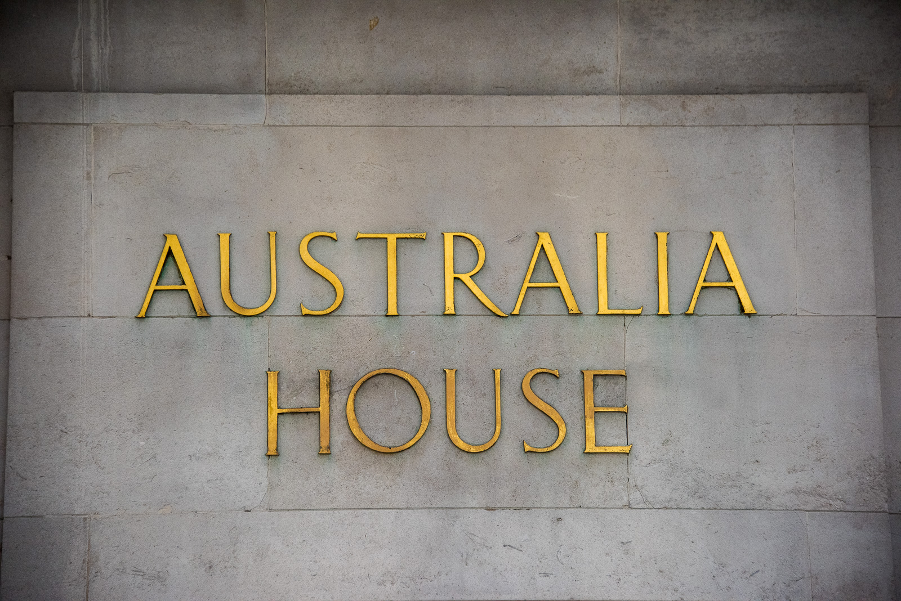
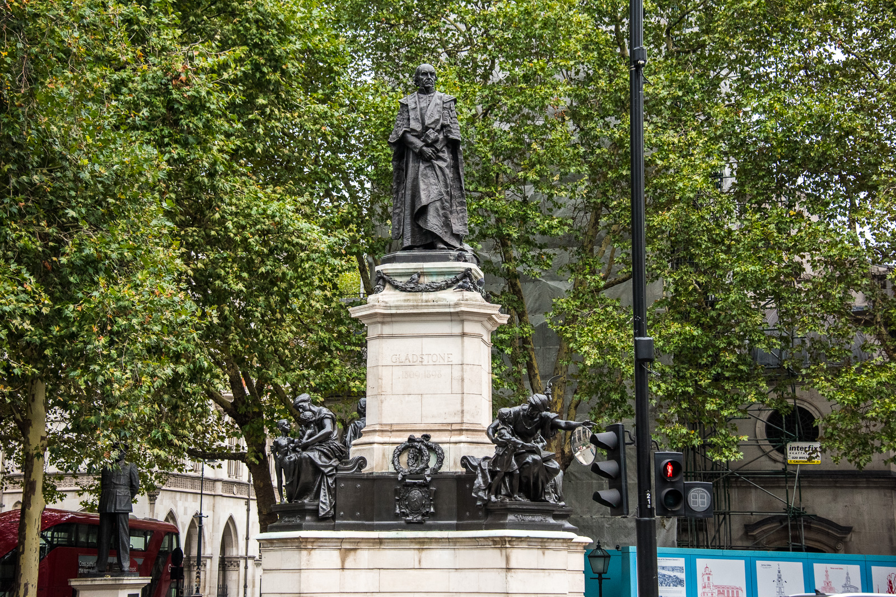

The Oldest High Commission
in Modern London
Australia House on the Aldwych is the oldest high commission building in London — a claim the guides make early and with some pride. It is also, by some measures, one of the most recognisable interiors in the city, though the reason for that recognition may surprise visitors who have never set foot inside: for many people, Australia House is Gringotts Bank.

The building occupies the wedge of land between the Strand and Aldwych, a prominent site on the curve of one of London's most theatrical junctions. The land was purchased for around £370,000 in 1913 by the first Australian High Commissioner. King George V laid the foundation stone, and building began that year.
Construction was interrupted almost immediately by the First World War. A special exemption was made so that Australia House could continue to be built despite wartime conditions — the diplomatic significance of the building outweighed the disruption to the construction schedule. Work resumed and the building was sufficiently complete for a small group to move in during 1916. It was not officially opened until 1918. Australia House has been the only occupant of the building since then; whatever was here before was cleared when the site was purchased and the street widened in preparation for the new building.
The Boomerang Club
& the £10 Passage to Australia
The first room on the Open House tour is the cinema hall — now a multipurpose events space, but with the original projection booth still visible in the upper wall, the holes where the projector once threaded its reels still apparent. It has been retrofitted with HDMI capability. The guide notes that some of the younger visitors in the room may not know what reel-to-reel film projection was. This is delivered without self-pity.
In 1927, the Duke and Duchess of York — the couple who would become King George VI and Queen Elizabeth — toured Australia. On their return, they came to Australia House and watched a film of their tour, here in this room. That was the beginning of its use as a screening space.
During the Second World War, the building became the Boomerang Club — a social venue for Australian servicemen and women, a place to meet, socialise, hold dances, collect mail, and feel connected to home. There is a bar behind one of the walls. Of course there is, the guide says. They are Australians.
After the war, the room served a different but equally significant purpose: Australia was actively recruiting migrants, and this was where the case was made. Films ran in two formats — Australian news reels, which took five or six weeks to arrive from Sydney or Melbourne, and promotional films showing Australia's open beaches, sunny weather and unclogged roads. The pitch was direct. In the 1950s, you could migrate to Australia on a £10 assisted passage bond. The guide pauses. Times change.
The room has since hosted concerts, presentations, World Cup screenings, and press events. In 2023, when the Women's World Cup was played in Australia, the room was used to watch the Matildas play England live. The guide describes this as a fun day, though notes the result diplomatically.
The Longest Continuous
Brass Handrails in London
Between the cinema hall and the upper rooms, the tour ascends a grand staircase. This is flagged by the guide as a significant architectural feature — specifically, the handrails. These are the longest continuous brass handrails in London. The guide acknowledges that this is a very specific category, but it is one the building holds without challenge.
Photographs are not permitted on the staircase or between rooms — only within the rooms themselves. The reason involves security protocols for a working diplomatic building, and the guide is matter-of-fact about it. The staircase is worth looking at on the way up, and on the way back down, if you can resist trying to photograph it.
The Downer Room &
a Father-and-Son High Commission
The room on the first floor is named after Sir Alexander Downer, High Commissioner from 1964 to 1972. His son, Alexander Downer Jr., served as High Commissioner from 2014 to 2018 — making them, across half a century, the only father and son to have each held the position. The room is named after the father.
The Downer Room today hosts receptions, roundtables and high-level meetings. It was previously a library where Australian residents of London could come in and borrow books — a service that ended after 2001, when security requirements changed the nature of public access to the building significantly.
Around the room are facts and artefacts relating to Australia's First Nations cultures, and information about ongoing repatriation efforts. The guide gives these proper space in the tour — they are not footnotes.
Gringotts, an Awkward Lunch
& the King's Signature
The exhibition hall is the room that most visitors, if they recognise any part of Australia House, will recognise. It served originally as a space to showcase Australian produce, goods and job opportunities — a kind of permanent trade exhibition. Later it became a reading room where Australian newspapers could be consulted. Now it is used for receptions, exhibitions and — most famously — film productions.
The exhibition hall was used as Gringotts Bank in the first Harry Potter film — its grand scale, marble columns and ornate detail providing exactly what the production needed for the wizarding world's most intimidating financial institution. The guide mentions this with the air of someone who has mentioned it many times and does not mind doing so again, because visitors are genuinely delighted by it every time.
A second filming connection: the hall was used for an awkward lunch scene in The Crown, involving Princess Diana. The guide refers to her as a national treasure, which gets a good response.
Sports teams also pass through — the Wallabies, the Socceroos, national cricket sides — for diplomatic events and media appearances. The hall is large enough to accommodate all of them, plus the Harry Potter fans who turn up hoping to recognise something.
The tour ends with the original visitors' book, open in a display case. King George V signed it. The signature is clear. The guide invites visitors to have a look before they leave.